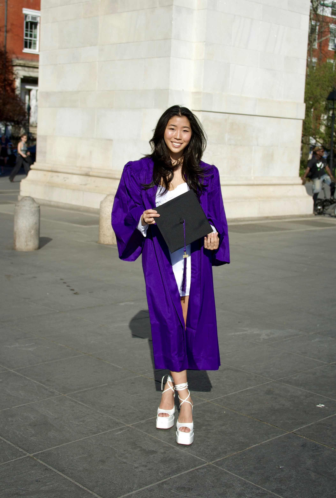

More Life
Contact Me
Hi I'm Danielle

I'm a coder fueled by a curiosity for how things work and an
interest in technologies/products that are shaping the world around me. I love exploring
new music, fitness/health, making/sharing delicious food, and my cat.
I recently graduated from NYU in May 2023 with a Bachelor of Arts in Computer Science and
I'm looking grow in and be a part of a collaborative, diverse, and uplifting community.
I value the learning process in all aspects of my life - work, hobbies, relationships, etc. -
and the best way is through experience!
Education
New York University, College of Arts and Sciences
Bachelor of Arts in Computer Science: GPA 3.58, Graduated May 2023
Relevant Coursework:
Basic Algorithms, Data Structures,
Parallel Computing, Natural Language Programming,
Computer Systems Organization, Object Oriented Programming,
Intro to Web Design and Computing Principles, Open Source Software Development
Work Experience
Johnson & Johnson - JJT MedTech Data and Analytics Strategy Co-Op
Jun 2022 - May 2023
- Full-stack development of an internal application for users to request access to business reporting tools and teams
-
Front-end: React, Express.js; Back-end: Node.js; Source code management: Bitbucket; Continuous testing and
deployment: Jenkins; Database: PostgreSQL; Host platform: AWS EC2
-
Developing, testing, and deploying the application as main developer over a tight 10 wk project timeline
-
Writing scripts as part of 6 man Agile team to perform ETL jobs to pull data from Salesforce into internal
data warehouse for downstream business reporting users; improved query performance
by implementing Amazon Redshift sort keys resulting in ~4x faster load speed
Sounds of New York City (SONYC)
Undergraduate Researcher
Jun 2020 - May 2021
- Worked with a music information retrieval (MIR) database with over 250m 10-second audio clips gathered from a
sensor network deployed across Manhattan, Brooklyn, and Queens since 2016
-
Developed a Python module to visualize the spatiotemporal distribution of noise via interactive heatmaps and
graphics (GeoPandas, Seaborn, Folium); analysis produced insights into which neighborhoods collected the most
samples and which days and months had the highest sound presence
-
Curated an open source urban sound dataset called MONYC containing 1.5k 10-second audio clips that had taggable
music content to support the development of MIR models for street music and cognitive research studies
April Labs
Product Solutions Intern
Jun 2021 - Aug 2021
-
Enabled April Labs, a video-powered discovery engine for apartment hunting, to generate NYC rental market insights
and match users with agents by sourcing customer data and compiling online inquiries on a local database
-
Increased April App’s TikTok following from 2k to 5k by conducting grassroots research on NYC neighborhoods and
sourcing unique locations such as restaurants, stores, and other small businesses for April’s content creators
Project Work
TripSplit
October 2021-December 2021
-
Co-developed TripSplit, a bill splitting web application, using the Agile project management approach
-
Stylized and created a user interface (React.js, CSS), developed the backend (Express.js), wrote unit tests
(JavaScript - Mocha, Chai), and implemented a continuous integration server as a badge on GitHub (Travis CI)
-
Created and maintained a database for the app (MongoDB), deployed the app (Digital Ocean)
Leadership Experience
-
NYU Women In Computing - Event Coordinator Apr 2020 - Dec 2022
-
NYU Strategic Venture Society - Venture Team Lead and Marketing Director Sep 2021 - May 2022
-
ORIGIN Bootcamp - 1st Place Winner of the 2020 Full Time Venture Competition
(out of 50 participating teams) Jun 2020
Skills
Java, Python, C, JavaScript, HTML, CSS, Figma, React, SQL, Qlik, PowerBI, Certified AWS Cloud
Practitioner